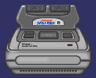

Again, the powers that be felt that the US market should not be able to play Japanese games outright. This time, the territorial lockout was simpler to defeat. If you compare a SFC cartridge with a SNES cartridge, you will notice that the SNES cartridge has two notches in the back that the SFC cartridge does not. Now, push in the flap where you plug in the cartridge on your SNES deck. If you look inside, you should see two plastic pieces sticking up that correspond to the notches on your SNES cartridge.
You now have two choices. You could cut notches in your SFC cartridge to match the plastic pieces inside. Or, you could simply cut the plastic pieces off. I recommend the second choice; it is easier and less noticeable. I have found that the easiest way to remove them is to take a pair of hand-held garden shears to clip them out. The same tabs exist on the SNES Game Genie and can be removed as well. If you are uncomfortable with either of these methods, you can buy adaptors which essentially extends the cartridge slot. The only adaptor I would consider buying would be the Super 8 adaptor. it allows you to play SNES, SFC, NES, and Famicom cartridges on your SNES deck. Unfortunately, I have never actually seen anyone selling this. Mark Drefahl has also suggested that the X-band device for the SNES also makes a good adaptor without modification (ed. He has no SFC cartridges to test it with, and I have never seen the X-band device. Not sure if actually works or not).
 I first heard of this device roughly around 1995. It was slated for release as a new accessory for the Super Famicom in Japan. It would use smaller cartridges and allow developers to design smaller games with many parts. Since then, I heard nothing more about this device until now. Lasse Reinikainen has informed me that the Sufami Turbo did not become vaporware. What follows below is what he has learned about this device.
The Sufami Turbo is add-on unit for Super Famicom. You plug it into the game module connector as a normal game module. Sufami Turbo has two game module slots (not normal ones).
The idea must be something like this: Sufami Turbo has some built-in resources (Japanese fonts, etc.) that allows you to save space when releasing modules (cartridges) for it. Possibly there is some multiplayer capabilities as well. I think the biggest advantage was that you can forget Nintendo and release games without licensing them (no paying money to Nintendo).
Jacob Poon adds that it's biggest feature is the ability to have two cartridges to share common resources. It is much like Sega's Sonic and Knuckles device. For example, you can plug in two SD Ultraman games and use Ultraseven in the game he is not featured in.